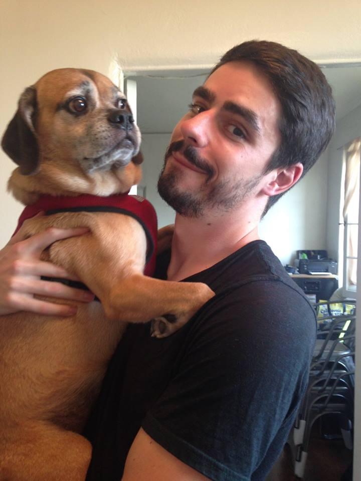

About Me

I was born and raised in Minneapolis, MN where I got my start working at the global headquarters for Best Buy on their mobile phones buying team. While there, I managed a SQL database of every phone, plan, and feature for every phone carrier we offered. This database fed the online and in-store purchase platforms and was an integral part of the business.
After moving to Los Angeles, I provided sales analysis and forecasting for Agent18, a mobile phone fashion accessory brand based in West Hollywood. Working closely with the CEO and VP of Operations, I grew the Nordstrom Rack and Amazon businesses to $1M+ in the first year while optimizing our Netsuite workflows to improve efficiency and accuracy.
In January of 2017 I joined the team at Happiest Baby as the Sr. Business Analyst and Process Improvement Manager. Aside from my daily reponsibilities of providing reporting and analytics to the sales, marketing, operations, customer care, and executive teams, I also led a team to completely redesign the homepage and the product pages. This redesign work was meant to bring the design language of the site closer to modern standards, improve conversion rate, and reduce returns through better information and better layout.